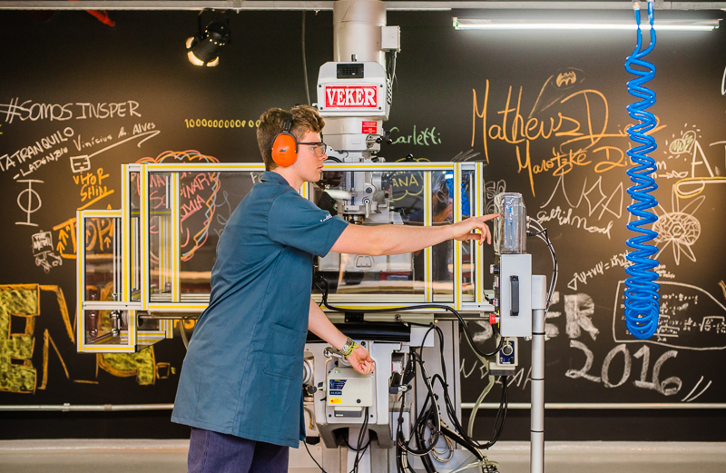

MÃO NA MASSA:
De ínicio pode parecer confuso, mas este termo foi escolhido para representar esta gama de projetos justamente por estes apresentarem um caráter de colocar os aprendizados em prática na realização de um produto fisico.
Em geral, estes trabalhos envolvem a utilização dos laboratórios de Engenharia, assim como os mais diversos máquinários que estão sempre a disposição do aluno.
Vale ressaltar que alguns desses projetos podem ter assumido algum caráter social, mas eles se encontram nesta seção devido à exigirem um caráter de trabalhar em um grupo e aplicar os conceitos aprendidos em aula na prática.
